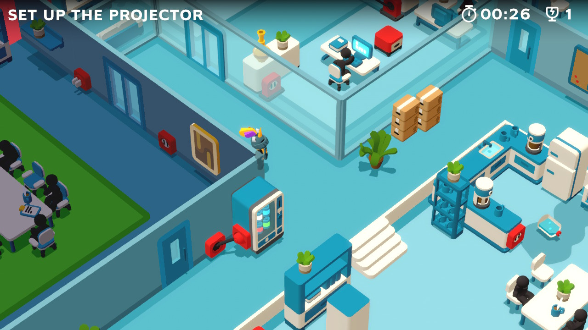

Good Job! 通關心得
先上Trailer, Good Job!是2020/03/26 ND mini上發布的，由老任本家發行，大概是因為畫風太像小品了，感覺沒啥人關注這款。
當初看遊戲模式和畫風實在是十分對我胃口，不過考量到重複遊玩性質並不高，價格以小品來說算不便宜，捏了約莫一個月後還是乖乖入手了w
價格目前最低在香港，約500 TWD。個人覺得若放在Steam上，約莫大概就是300左右的價格我會買單，不過NS嘛，加點老任稅也是合理的(X)
沒中文，不過不影響，單字量不多，遊戲內沒有對話，大概選單那些字，跟任務目標這樣。
遊戲人數支援1-2人，不過由於沒朋友QQ，本篇的遊戲體驗皆是在單人之情況下。
不負責懶人包:
+關卡設計有趣
+創意解法，想怎麼玩就怎麼玩
-沒中文，個人覺得沒差文字量不多
-價格
-重玩價值不高
-少部分掉禎
雖然缺點寫的比優點多，但是都不是大缺點w，有時間的話建議看一下內文或Gameplay決定是否購買，個人還滿推薦這款的

Good Job!是以一層一層作為關卡分界點，一共8+1層，前8層每層有3個房間/任務要完成，完成後會解鎖最後一個升階關卡，通關後才能前往下一層。
而每層各代表一個部門，而該層關卡通常會有些該部門的特色因素， 像是Research該層主要都是神秘的Goo(?)相關、Robotic要利用產線製造機器人…
清理Goo
遊戲內容很簡單，每關會有簡單的任務目標，用任何辦法達成都可。舉level 101為例，目標是要把A房間的投影機移到B房間並插電，照正常遊戲邏輯的解法可能得把投影機繞一大圈才能到B房間門口，接著人先得從另個入口把外面的販賣機電源拉進去B房間把投影機所在的電動門打開，才能把投影機送進去B房間。來來去去5分鐘可能跑不掉
右側為A房間的投影機

左上為B房間，(需要把販賣機的電拉上去上面門旁間的插座才能開門)
或者，直接在A房間直接把電線接起來像彈弓一樣，直接把投影機放在彈弓上，彈射破牆直接進入B房間，插電啟動投影機，搞定。整個流程最快可能才40-50秒而已
彈射投影機
有趣的是整個遊戲是十分鼓勵以後者這般創意解來完成，通關後會有三關評價標準：時間、破壞物品金額、破壞物品數量。底下會有個總結評價，摸了一陣子後才發現總結評價其實跟破壞物品金額和數量完全無關，他其實就是你的完成時間評價而已w，故如前述關卡101，要是中規中矩完成絕不可能拿到最佳的S評價(約50秒內完成)
由上述評價機制可以看得出來遊戲基本上就是想要玩家突破傳統思維，能夠發掘到關卡中刻意埋的巧思，用有點像是鑽漏洞的模式通關。不過這邊也得提一下，有少數幾關可能是我沒發覺創意解(?)，用中規中矩的解法會覺得有些煩躁。但大部分關卡的設計我都覺得算是十分有趣，並且難度也不會到太高。
個人覺得約莫可以把通關方式分為三類：
1.傳統思維，就是一般RPG遊戲解任務的那種感覺，可能就是不破壞牆乖乖繞遠路啦blablabla
2.開發者所設想普羅大眾的解法，如前所述，直接把彈射投影機破牆，但除非角度對，否則可能還是要稍微推一下或兩三次彈射才能完成。畢竟在Trailer中就有明示了，要發覺這種解法個人覺得並不難，基本上稍微跟環境物件互動就會發現了，但除非運氣好，或極端操作(?)不然還是會拿不到S
3.開發者所隱藏的S解(?)，可能是得發現某些特別的東西(詳見文末防劇透區)，或者是得用正確的角度(+運氣?)直接把投影機彈射進B房間，我覺得要發覺這個就有些難度了

能用左上的拖把慢慢拖，或者是透過容易爆衝的拖地機爽爽(?)拖
個人通關時數約10多小，沒特別刷蒐集要素跟成積。遊戲本身畢竟沒什麼壓力，而用甚麼方式通關也都可，在沒有刻意追求蒐集和成績之情況下，並沒有甚麼難度可言；不過若要追求全S我覺得可能就挺有難度了，畢竟可能得突破不少思維盲點、操作也得有一定速度水準，或者換個角度說，你得follow到開發者們思維，找到他們所隱藏的創意解，才有可能拿到S。
提點缺點，可能是小物件多+物理碰撞?有時候會有掉禎之情況，看到這種畫面竟然還會掉禎真的是zzz，不過影響不大就是了。然後沒有點名S評價所需的時間，這點我是覺得見仁見智還好。剩下大概某些關卡(像澆200朵花)，雖然會顯示還需要幾朵要是漏掉一兩朵然後房間被搞得亂糟糟會找到很腦羞ww，嚴格的說這也不大算缺點就是了。
雖然沒玩過Untitled Goose Game, 但這兩款遊戲給我有種相似的感覺，可能是類似突破世俗觀點的感覺吧(?)抑或者是兩者的畫面呈現相似，又或者是價格都一樣貴(X)。Good Job!算是十分值得一玩的創意遊戲，遊戲途中不少次會玩到會心一笑，整個遊玩過程中也不會有太大的壓力，且還能到處破壞，十分紓壓(?)
==以下會提到舉些算是設計巧思，會有S解法劇透之嫌疑，介意者請跳過==
舉幾個關卡的例子：
像是得幫整個花園澆花，你可以乖乖舉著澆花壺慢慢澆，沒水再去一旁水池補水，如此repeat
或者是把消防水管接上噴水池，直接搞定噴水池附近的花，再直接透過消防水管澆花
(這關忘記有沒有S了，我猜是沒有，所以就是一般解
另外一個我很喜歡的關卡，目標是組裝3台機器人，正常的解法是把各個零件放到產線上，多步驟慢慢的結合，雖不會到繁瑣，但是快不到哪
但是仔細觀察會發現終點旁邊會有個高台，裡面有台組裝好的機器人在跑，附近有按鈕可以控制，把它推下來就有一台了；另外入口櫥窗也有一台展示機，把櫥窗打破想辦法把他弄出來再一台；產線附近也有個屏風小區塊內有一台，老樣子，打破，想辦法搞出來，三台搞定w
而後兩台機器人搞出來還要用紅線在地上畫道路才能把他們順利引導至終點
1.高台的機器人
紅燈這邊有按鈕可以互動推下機器人
2.入口櫥窗的展示機，同時示意組裝流程
3.產線旁的測試機